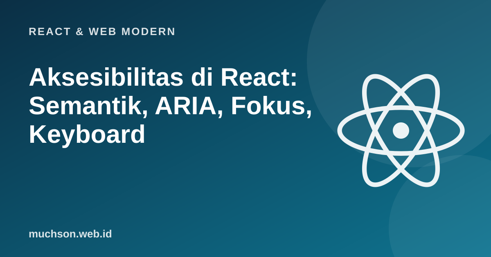

Aksesibilitas di React: Semantik, ARIA, Fokus, Keyboard
Aksesibilitas bukan fitur tambahan untuk segelintir pengguna. Sekitar satu dari enam orang di dunia hidup dengan disabilitas, dan banyak lagi memakai keyboard, layar kecil di bawah matahari, atau koneksi lambat. Kabar baiknya: sebagian besar aksesibilitas berasal dari menulis HTML yang benar, dan React tidak menghalangi itu.
Oleh Muhammad Muchson Attoyibi··3 menit baca·Tingkat: Menengah
Sebaiknya sudah paham: React dasar, HTML dasar

Tujuan belajar
Setelah membaca dan mencoba materi ini, Anda mampu:
memakai elemen HTML semantik alih-alih div serba guna
memberi label pada form dan kontrol dengan benar
memakai ARIA hanya bila diperlukan dan dengan benar
memastikan seluruh fungsi dapat dipakai dengan keyboard dan mengelola fokus
memeriksa kontras warna dan menguji aksesibilitas
Aturan pertama: pakai elemen yang tepat
Elemen HTML semantik membawa perilaku aksesibilitas gratis: button bisa difokuskan, aktif dengan Enter dan Spasi, dan diumumkan sebagai "tombol". div onClick tidak punya satu pun dari itu.
// Setiap input butuh label yang terhubung
<label htmlFor="surel">Surel</label>
<input id="surel" type="email" autoComplete="email" required aria-describedby="surel-bantuan" />
<p id="surel-bantuan">Kami tidak membagikan surel Anda.</p>
// Galat: umumkan ke teknologi bantu
<input id="sandi" aria-invalid={!!galat} aria-describedby={galat ? 'sandi-galat' : undefined} />
{galat && <p id="sandi-galat" role="alert">{galat}</p>}
// Placeholder BUKAN pengganti label (hilang saat mengetik, kontras rendah, tidak selalu diumumkan)
ARIA: gunakan sedikit dan dengan benar
ARIA bukan pewarna ajaib
Aturan pertama ARIA: jangan memakai ARIA bila elemen HTML native bisa melakukannya. ARIA hanya mengubah apa yang diumumkan teknologi bantu; ia tidak menambah perilaku keyboard. role="button" pada div tidak membuatnya bisa ditekan dengan Enter. ARIA yang salah lebih buruk daripada tanpa ARIA.
Atribut
Fungsi
Contoh
aria-label
Nama untuk elemen tanpa teks terlihat
Tombol ikon:
aria-labelledby
Mengacu elemen lain sebagai nama
Bagian dengan judulnya
aria-describedby
Deskripsi tambahan
Teks bantuan atau pesan galat
aria-expanded
Status buka/tutup
Tombol akordeon dan menu
aria-live / role="alert"
Mengumumkan perubahan dinamis
Pesan sukses atau galat
aria-hidden="true"
Menyembunyikan dari teknologi bantu
Ikon dekoratif (jangan pada elemen yang bisa difokuskan)
Keyboard dan fokus
Semua yang bisa diklik harus bisa dicapai dan dioperasikan dengan Tab, Enter, Spasi, dan Esc (untuk menutup).
Urutan fokus mengikuti urutan visual dan logis; jangan memakai tabindex positif.
Indikator fokus harus terlihat; jangan outline: none tanpa pengganti.
Modal: pindahkan fokus ke dalam saat dibuka, kurung fokus di dalamnya, tutup dengan Esc, dan kembalikan fokus ke pemicu saat ditutup. Elemen bawaan <dialog> menangani sebagian besar ini.
Pindah halaman di SPA: pindahkan fokus ke judul halaman baru dan umumkan perubahan agar pengguna pembaca layar tahu.
import { useEffect, useRef } from 'react';
function Modal({ buka, onTutup, judul, children }) {
const dialogRef = useRef(null);
useEffect(() => {
const d = dialogRef.current;
if (buka && !d.open) d.showModal(); // <dialog>: kurung fokus, Esc, latar tak aktif
if (!buka && d.open) d.close();
}, [buka]);
return (
<dialog ref={dialogRef} onClose={onTutup} aria-labelledby="judul-modal">
<h2 id="judul-modal">{judul}</h2>
{children}
<button type="button" onClick={onTutup}>Tutup</button>
</dialog>
);
}
Dengan elemen dialog native, perilaku fokus yang sulit (kurungan fokus, Esc, mengembalikan fokus) sudah ditangani browser.
Warna dan kontras
WCAG mensyaratkan rasio kontras minimal 4,5:1 untuk teks biasa dan 3:1 untuk teks besar dan komponen UI (tingkat AA). Jangan menyampaikan informasi hanya lewat warna (misalnya galat hanya berwarna merah); tambahkan ikon atau teks.
// Menghitung rasio kontras WCAG 2.x antara dua warna heksa
function luminans(hex) {
const [r, g, b] = [1, 3, 5].map(i => parseInt(hex.slice(i, i + 2), 16) / 255)
.map(v => (v <= 0.03928 ? v / 12.92 : ((v + 0.055) / 1.055) ** 2.4));
return 0.2126 * r + 0.7152 * g + 0.0722 * b;
}
function kontras(a, b) {
const [l1, l2] = [luminans(a), luminans(b)].sort((x, y) => y - x);
return (l1 + 0.05) / (l2 + 0.05);
}
const kasus = [['#767676', '#ffffff'], ['#777777', '#ffffff'], ['#0f1a33', '#ffffff'], ['#1e5ab2', '#e8f1ff'], ['#9aa5b8', '#ffffff']];
for (const [fg, bg] of kasus) {
const r = kontras(fg, bg);
console.log(fg, 'di atas', bg, '->', r.toFixed(2) + ':1', r >= 7 ? 'AAA' : r >= 4.5 ? 'AA (teks biasa)' : r >= 3 ? 'hanya teks besar/komponen' : 'GAGAL');
}
#767676 di atas #ffffff -> 4.54:1 AA (teks biasa)
#777777 di atas #ffffff -> 4.48:1 hanya teks besar/komponen
#0f1a33 di atas #ffffff -> 17.27:1 AAA
#1e5ab2 di atas #e8f1ff -> 5.84:1 AA (teks biasa)
#9aa5b8 di atas #ffffff -> 2.49:1 GAGAL
#767676 di atas putih adalah abu-abu paling terang yang masih lolos AA untuk teks biasa (rasio 4,54:1); #777777 sedikit di bawah batas.
Menguji aksesibilitas
Otomatis: eslint-plugin-jsx-a11y saat menulis, axe DevTools atau Lighthouse di browser, dan jest-axe/vitest-axe di tes. Alat otomatis hanya menangkap sebagian masalah (sekitar sepertiga).
Keyboard: cabut mouse. Bisakah Anda mencapai dan memakai semuanya dengan Tab, Enter, Spasi, Esc? Apakah fokus selalu terlihat?
Pembaca layar: coba NVDA (Windows, gratis), VoiceOver (macOS/iOS), atau TalkBack (Android) pada alur utama.
Zoom dan teks besar: perbesar 200%, ubah ukuran huruf; pastikan tata letak tidak pecah.
Pengguna nyata dengan kebutuhan beragam memberi wawasan yang tak tergantikan.
Pengguna keyboard kehilangan petunjuk letak fokus; sediakan gaya fokus pengganti yang jelas.
4. Mengapa jangan menyampaikan galat hanya dengan warna merah?
Pengguna buta warna atau pembaca layar tidak menangkapnya; tambahkan teks atau ikon dan role="alert".
Coba kerjakan dulu sebelum membuka jawaban.
Ringkasan
HTML semantik memberi aksesibilitas gratis: button, a, heading, landmark, label.
ARIA hanya bila perlu dan dengan benar; ia mengubah pengumuman, bukan perilaku.
Semua fungsi harus bisa dipakai dengan keyboard; kelola fokus pada modal dan perpindahan halaman.
Kontras minimal 4,5:1 (AA) dan jangan hanya mengandalkan warna.
Uji dengan alat otomatis, keyboard, dan pembaca layar.
Tanya jawab
Apakah aksesibilitas wajib secara hukum?
Di banyak negara ada regulasi (misalnya ADA, EAA di Uni Eropa) dan pedoman pemerintah; di Indonesia ada ketentuan tentang kesetaraan akses layanan publik. Terlepas dari itu, aksesibilitas memperluas jangkauan pengguna.
Apa itu WCAG?
Web Content Accessibility Guidelines dari W3C; tingkat A, AA, dan AAA. AA adalah target umum.
Apakah aksesibilitas memperlambat pengembangan?
Jauh lebih murah bila dibangun sejak awal daripada diperbaiki belakangan.
Muhammad Muchson AttoyibiSoftware Engineer dan Academic Trainer di Malang. Menulis tentang teknologi, belajar, dan hal praktis sehari-hari. Tentang saya